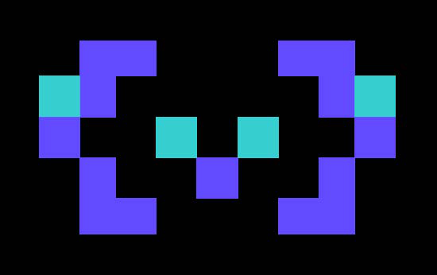

2025-05-15
一句话总结:Qwen3 把 thinking mode 与 non-thinking mode 融合进同一个模型(用 /think、/no think 与空 <think></think> 块作开关,并支持 thinking budget 截断),用 36T tokens 多语种(119 种)三阶段预训练,加上四阶段后训(long-CoT cold start → reasoning RL → thinking mode fusion → general RL),并以 strong-to-weak distillation 把 Qwen3-32B/235B 的能力蒸馏到 0.6B~14B 小模型,旗舰 Qwen3-235B-A22B(MoE,激活 22B)。
🎯 面试考点(高频):
- Thinking mode 实现机制:用 chat template + 特殊 flag(
/think、/no think)在同一模型里切两套行为;非思考模式仍保留空的<think></think>块以维持格式一致性。Thinking budget 是把思考长度截断到用户指定阈值后,强制插入 “Considering the limited time by the user, I have to give the solution based on the thinking directly now.\n</think>” 提示让模型立即给最终答案——这种"基于不完整思考作答"的能力不是显式训练,而是 mode fusion 后自然涌现。 - MoE 架构(Qwen3-235B-A22B / 30B-A3B):总参 235B / 激活 22B(或 30B/3B),128 个专家、每 token 激活 8 个,采用 fine-grained expert segmentation 但去掉 shared expert(与 Qwen2.5-MoE 不同);用 global-batch load balancing loss 促进专家分化。结合 GQA(Q/KV 头 64/4)、SwiGLU、RoPE、RMSNorm pre-norm,attention 去掉 QKV-bias 改加 QK-Norm 以稳训。
- 36T 数据组成:相对 Qwen2.5 数据量 ×2、语言数 29→119;用 Qwen2.5-VL OCR 海量 PDF + Qwen2.5 精炼;Qwen2.5-Math、Qwen2.5-Coder 合成数学/代码/教科书/QA 数据;在 30T+ token 上做多维度细粒度标注(教育价值、领域、安全),并在 instance-level(而非 source/domain-level)优化数据混合比例。
- 三阶段预训练 + 长上下文扩展:S1 通用 30T tokens / seq 4K;S2 加 5T STEM+code+reasoning 高质量数据并加速 lr decay;S3 长上下文 hundreds of B tokens / seq 32K(75% 落在 16–32K)。长上下文用 ABF 把 RoPE base 从 $10{,}000$ 提到 $1{,}000{,}000$,推理阶段再叠加 YARN + Dual Chunk Attention(DCA) 实现 4× 序列长度扩展(到 128K)。
- 与 Qwen2.5 的对比:Qwen3 dense 模型在小一档就能追平 Qwen2.5 大一档(1.7B/4B/8B/14B/32B 分别 ≈ Qwen2.5-3B/7B/14B/32B/72B);MoE 用 1/5 激活参数追平同代 dense,用 1/10 Qwen2.5 dense 激活量就能持平——预训练数据扩 2× + 架构改进(QK-Norm、global-batch LB、fine-grained MoE)是主要原因。
- 与 DeepSeek-R1 的对照:R1 是专用推理模型(纯 long-CoT + GRPO RL),Qwen3 把推理与对话融合到一个模型并加 budget 控制;两者都用 GRPO 做 Reasoning RL,但 Qwen3 后续还有 Thinking Mode Fusion(继续 SFT 把两模式拼起来)和 General RL(20+ 任务、3 类 reward:rule-based / model-based with ref / model-based no-ref)。Qwen3-32B Thinking 在 17/23 个 benchmark 上超过 QwQ-32B、并与 OpenAI o3-mini medium 接近。
- Strong-to-Weak Distillation 细节:小模型(0.6B~14B + 30B-A3B MoE)不独立跑四阶段后训,而是分两步——① off-policy:把 teacher(Qwen3-32B / 235B-A22B)在
/think与/no think两种 mode 下生成的输出做 response 蒸馏;② on-policy:student 自己生成、对齐 teacher logits 做 KL 散度最小化。结果:与直接做 RL 相比,蒸馏在 Qwen3-8B 上 AIME'24 60.3 vs 52.9、且 GPU hours 仅 1/10(1,800 vs 17,920),并能提升 Pass@64(扩大探索空间),而 RL 不提。 - Thinking budget 的 scaling 现象:在 AIME'24/'25、LiveCodeBench、GPQA 上,Qwen3-235B-A22B 性能随分配给思考的 token 数单调平滑上升,呈现明显的 inference-time scaling——这是论文最重要的 selling point 之一。
- Preamblep.1
- Abstractp.1
- §1 Introduction / 引言p.2
- §2 Architecture / 模型架构p.3
- §3.1 Pre-training Data / 预训练数据p.4
- §3.2 Pre-training Stage / 三阶段预训练p.5
- §3.3 Pre-training Evaluation / 基础模型评测p.6
- §4.1 Long-CoT Cold Start / 长 CoT 冷启动p.10
- §4.2 Reasoning RL / 推理强化学习p.10
- §4.3 Thinking Mode Fusion / 思考模式融合p.11
- §4.4 General RL / 通用强化学习p.11
- §4.5 Strong-to-Weak Distillation / 强弱蒸馏p.12
- §4.6 Post-training Evaluation / 后训练评测p.12
- §5/6 Discussion & Conclusion / 讨论与结论p.20
- Appendix · Long-Context & Multilingualp.23
- References(略)p.31
🖼 图表速览 (2 张) · 点击放大

① 图说明:PDF 解析得到的低分辨率残片,并非原论文 Figure 1。原论文 Figure 1 是 Qwen3 系列模型的后训练四阶段管线图。
② 真实 Figure 1 的内容(据正文 §4):顶部"旗舰路线"对 Qwen3-235B-A22B 和 Qwen3-32B 依次走Stage 1 Long-CoT Cold Start → Stage 2 Reasoning RL → Stage 3 Thinking Mode Fusion → Stage 4 General RL;底部"轻量路线"对 Qwen3-30B-A3B / 14B / 8B / 4B / 1.7B / 0.6B 走 Strong-to-Weak Distillation(off-policy + on-policy)。两条路线都从 Base Models 出发,但小模型跳过四阶段而以蒸馏代替。
③ 启示:这张图是论文的方法学骨架——thinking 与 non-thinking 能力的"分→合"靠 Stage 1+2 先训出 thinking、再 Stage 3 用 chat-template 把 non-thinking 拼回来;小模型只用蒸馏(GPU hours ≈ 1/10)就拿到等同甚至更强的 Pass@1 与更大的 Pass@64,印证了"强教师好过自己跑 RL"。

① 图说明:这是 Qwen 团队的品牌 logo,被 PDF 解析当作图像抓取;并非论文里真正的 Figure 2。
② 真实 Figure 2 的内容(据 §5.1 Discussion):展示 Qwen3-235B-A22B 在 AIME'24/'25、LiveCodeBench、GPQA-Diamond 等 benchmark 上,性能随 thinking budget 单调平滑上升的 scaling 曲线。论文称把 output 长度超过 32K 后性能预计仍会继续提升。
③ 启示:这条 scaling 曲线是 thinking mode 的"价值证明"——只要把推理 token 预算开大,模型分数可以连续爬升,等价于一种用户可控的 inference-time scaling。它把 OpenAI o1/o3 那种"内部不可见的思考延迟"暴露成显式可调的 budget,为线上工程提供了延迟/效果的旋钮。
📖 论文正文(英文,按章节折叠)
Preamblep.1
2025-05-15 Qwen3 Technical Report Qwen Team https://huggingface.co/Qwen https://modelscope.cn/organization/qwen https://github.com/QwenLM/Qwen3
Abstractp.1
In this work, we present Qwen3, the latest version of the Qwen model family. Qwen3 comprises a series of large language models (LLMs) designed to advance performance, efficiency, and multilingual capabilities. The Qwen3 series includes models of both dense and Mixture-of-Expert (MoE) architectures, with parameter scales ranging from 0.6 to 235 billion. A key innovation in Qwen3 is the integration of thinking mode (for complex, multi-step reasoning) and non-thinking mode (for rapid, context-driven responses) into a unified framework. This eliminates the need to switch between different models—–such as chat-optimized models (e.g., GPT-4o) and dedicated reasoning models (e.g., QwQ32B)—–and enables dynamic mode switching based on user queries or chat templates. Meanwhile, Qwen3 introduces a thinking budget mechanism, allowing users to allocate computational resources adaptively during inference, thereby balancing latency and performance based on task complexity. Moreover, by leveraging the knowledge from the flagship models, we significantly reduce the computational resources required to build smaller-scale models, while ensuring their highly competitive performance. Empirical evaluations demonstrate that Qwen3 achieves state-of-the-art results across diverse benchmarks, including tasks in code generation, mathematical reasoning, agent tasks, etc., competitive against larger MoE models and proprietary models. Compared to its predecessor Qwen2.5, Qwen3 expands multilingual support from 29 to 119 languages and dialects, enhancing global accessibility through improved cross-lingual understanding and generation capabilities. To facilitate reproducibility and community-driven research and development, all Qwen3 models are publicly accessible under Apache 2.0. 1 arXiv:2505.09388v1 [cs.CL] 14 May 2025 1
§1 Introduction / 引言p.2
The pursuit of AGI / ASI has long motivated humanity, and recent advances in large foundation models—GPT-4o, Claude 3.7, Gemini 2.5, DeepSeek-V3, Llama-4, and Qwen2.5—have shown significant progress. These models are trained on vast datasets across trillions of tokens, effectively distilling human knowledge into parameters. Recent reasoning models optimized through reinforcement learning (e.g., o3, DeepSeek-R1) further highlight the potential of inference-time scaling. While most state-of-the-art models remain proprietary, the open-source community has dramatically narrowed the gap, with an increasing number of top-tier models being released openly.
对通用人工智能(AGI)与超级人工智能(ASI)的追求长久以来一直驱动着人类,近期一批大型基础模型——GPT-4o、Claude 3.7、Gemini 2.5、DeepSeek-V3、Llama-4 和 Qwen2.5——展示了显著进展。这些模型在跨数万亿 token 的海量语料上训练,有效地把人类知识蒸馏进参数。近期通过强化学习优化的推理模型(如 o3、DeepSeek-R1)进一步凸显了推理时扩展(inference-time scaling)的潜力。虽然大多数 SOTA 模型仍是闭源,开源社区已大幅缩小差距,越来越多顶级模型被开源发布。
In this work we introduce Qwen3, the latest series in our Qwen foundation-model family. We release both dense and Mixture-of-Experts (MoE) models ranging from 0.6B to 235B parameters; the flagship Qwen3-235B-A22B is an MoE model with 235B total parameters and 22B activated per token. Qwen3 integrates two operating modes—thinking mode and non-thinking mode—into a single model, eliminating the need to switch between separate models like Qwen2.5 and QwQ. It further introduces thinking budgets, allowing fine-grained user control over reasoning effort. Qwen3 is pre-trained on 36 trillion tokens covering up to 119 languages and dialects, dramatically expanding multilingual capability.
本工作我们推出 Qwen3——Qwen 基础模型家族的最新系列。我们同时发布 dense 模型与 Mixture-of-Experts(MoE)模型,参数规模从 0.6B 到 235B;旗舰 Qwen3-235B-A22B 是一个总参 235B、每 token 激活 22B 的 MoE。Qwen3 把两种运行模式——thinking mode 与 non-thinking mode——融合进同一个模型,从而不必再在 Qwen2.5 与 QwQ 等不同模型之间切换。它还引入 thinking budgets,让用户能对推理深度做细粒度控制。Qwen3 在 36 万亿 token 上预训练,覆盖 119 种语言和方言,大幅扩展了多语种能力。
Pre-training of Qwen3 follows a three-stage strategy on the 36T-token corpus. Stage 1 trains on about 30T tokens to build a strong general-knowledge foundation. Stage 2 further trains on knowledge-intensive data emphasizing STEM and coding to strengthen reasoning. Stage 3 extends context length from 4,096 to 32,768 tokens using long-context corpora. To efficiently expand the data, the team fine-tunes Qwen2.5-VL to extract text from large PDF collections, and uses Qwen2.5-Math and Qwen2.5-Coder to synthesize trillions of math and code tokens.
Qwen3 的预训练在 36T token 语料上采用三阶段策略。第一阶段约用 30T tokens 训练以打下牢固的通用知识基础。第二阶段在知识密集型数据上继续训练,加大 STEM 与代码占比以增强推理。第三阶段在长上下文语料上训练,把最大上下文长度从 4,096 扩到 32,768 tokens。为高效扩充数据,团队把 Qwen2.5-VL 微调用于从海量 PDF 文档中提取文本,并用 Qwen2.5-Math 与 Qwen2.5-Coder 合成数万亿条数学与代码 token。
For post-training, Qwen3 uses a multi-stage approach that empowers both thinking (reasoning) and non-thinking modes. The first two stages develop strong reasoning via long-CoT cold-start fine-tuning followed by RL focused on math and code. The next two stages merge data with and without reasoning paths and then apply general-domain RL to broaden capabilities. For smaller models the team adopts strong-to-weak distillation, combining off-policy and on-policy knowledge transfer from larger teachers, which significantly outperforms direct RL in both quality and training efficiency.
后训练采用多阶段方法,同时赋予模型 thinking(推理)与 non-thinking 两种模式。前两阶段通过长链思维(long-CoT)冷启动微调,再叠加聚焦数学与代码的 RL,以发展强推理能力。后两阶段把带与不带推理过程的数据合并训练,然后做通用领域 RL,以拓宽各类下游能力。对较小的模型,团队采用强弱蒸馏(strong-to-weak distillation),把更大教师的知识以 off-policy + on-policy 两种方式迁移过来——这显著优于让小模型自己跑 RL,无论在效果还是训练效率上。
Evaluation across a broad benchmark suite shows that Qwen3 base models achieve state-of-the-art performance, while post-trained models—in either mode—compete with leading proprietary and large MoE models such as o1, o3-mini, and DeepSeek-V3. The flagship Qwen3-235B-A22B reaches 85.7 on AIME'24, 81.5 on AIME'25, 70.7 on LiveCodeBench v5, 2,056 on CodeForces, and 70.8 on BFCL v3. Other Qwen3 models also show strong performance relative to size. Crucially, increasing the thinking budget yields consistent improvements across tasks, demonstrating user-controllable inference-time scaling.
跨广泛 benchmark 的评测显示:Qwen3 base 模型取得 SOTA;后训练模型在两种模式下都能与领先的闭源模型及大型 MoE 模型(如 o1、o3-mini、DeepSeek-V3)正面竞争。旗舰 Qwen3-235B-A22B 在 AIME'24 上 85.7、AIME'25 81.5、LiveCodeBench v5 70.7、CodeForces 2,056、BFCL v3 70.8。Qwen3 其它较小尺寸模型也在同档位呈现出有竞争力的表现。关键的是,增加 thinking budget 在各任务上都带来一致提升——这是一种用户可控的推理时扩展。
§2 Architecture / 模型架构p.3
The Qwen3 series includes 6 dense models—Qwen3-0.6B / 1.7B / 4B / 8B / 14B / 32B—and 2 MoE models—Qwen3-30B-A3B and the flagship Qwen3-235B-A22B (235B total, 22B activated per token). The dense architecture is similar to Qwen2.5, using Grouped Query Attention (GQA), SwiGLU, Rotary Positional Embeddings (RoPE), and RMSNorm with pre-normalization. We remove the QKV-bias used in Qwen2 and introduce QK-Norm into the attention mechanism to ensure stable training. Key dense-model configurations (layers, Q/KV heads, tie-embedding, context length) appear in Table 1.
Qwen3 系列包括 6 个 dense 模型——Qwen3-0.6B / 1.7B / 4B / 8B / 14B / 32B——与 2 个 MoE 模型——Qwen3-30B-A3B 和旗舰 Qwen3-235B-A22B(总参 235B、每 token 激活 22B)。dense 部分整体架构与 Qwen2.5 类似,使用 Grouped Query Attention(GQA)、SwiGLU、Rotary Positional Embeddings(RoPE)以及带前置归一化的 RMSNorm。我们去掉了 Qwen2 中的 QKV-bias,并在 attention 里引入 QK-Norm,以保证训练稳定。Dense 模型的关键配置(层数、Q/KV 头数、是否共享词表、上下文长度)见 Table 1。
The Qwen3 MoE models share the same fundamental architecture as the dense models. Following Qwen2.5-MoE, we use fine-grained expert segmentation, with 128 total experts and 8 activated per token. Unlike Qwen2.5-MoE, Qwen3-MoE excludes shared experts. We further adopt a global-batch load balancing loss to encourage expert specialization. These architectural and training innovations yield substantial performance gains on downstream tasks. Qwen3 reuses Qwen's byte-level BPE (BBPE) tokenizer with vocabulary size 151,669.
Qwen3 的 MoE 模型与 dense 共享相同的基础架构。沿用 Qwen2.5-MoE,我们采用细粒度专家分割(fine-grained expert segmentation),总计 128 个专家、每 token 激活 8 个。与 Qwen2.5-MoE 不同,Qwen3-MoE 去掉了 shared experts。我们进一步采用 global-batch load balancing loss 来鼓励专家分化。这些架构与训练上的创新在下游任务上带来显著性能提升。Qwen3 沿用 Qwen 的 byte-level BPE(BBPE)分词器,词表大小 151,669。
Dense model configurations (Table 1): Qwen3-0.6B / 1.7B use 28 layers, 16/8 Q/KV heads, tied embeddings, 32K context; Qwen3-4B uses 36 layers, 32/8 heads, tied, 128K context; Qwen3-8B uses 36 layers, 32/8 heads, untied, 128K; Qwen3-14B has 40 layers, 40/8 heads, untied, 128K; Qwen3-32B has 64 layers, 64/8 heads, untied, 128K. MoE configurations (Table 2): Qwen3-30B-A3B: 48 layers, 32/4 Q/KV heads, 128/8 experts, 128K; Qwen3-235B-A22B: 94 layers, 64/4 Q/KV heads, 128/8 experts, 128K.
Dense 模型配置(表 1):Qwen3-0.6B / 1.7B 为 28 层、16/8 Q/KV 头、共享 embedding、32K 上下文;Qwen3-4B 36 层、32/8 头、共享、128K;Qwen3-8B 36 层、32/8 头、不共享、128K;Qwen3-14B 40 层、40/8 头、不共享、128K;Qwen3-32B 64 层、64/8 头、不共享、128K。MoE 配置(表 2):Qwen3-30B-A3B 48 层、32/4 Q/KV 头、128/8 专家、128K;Qwen3-235B-A22B 94 层、64/4 Q/KV 头、128/8 专家、128K。
§3.1 Pre-training Data / 预训练数据p.4
Compared with Qwen2.5, we significantly expanded the scale and diversity of training data—collecting twice as many pre-training tokens covering three times more languages. All Qwen3 models are trained on a dataset spanning 119 languages and dialects with 36 trillion tokens in total. The data includes high-quality content across coding, STEM, reasoning tasks, books, multilingual texts, and synthetic data. To expand the corpus, we use Qwen2.5-VL to OCR a large volume of PDF documents and then refine the recognized text with Qwen2.5, yielding trillions of additional high-quality tokens.
相比 Qwen2.5,我们显著扩充了训练数据的规模与多样性——预训练 token 数 ×2、语言数 ×3。所有 Qwen3 模型都在覆盖 119 种语言和方言、总量 36 万亿 token 的语料上训练。数据涵盖代码、STEM、推理任务、书籍、多语种文本和合成数据等高质量内容。为扩充语料,我们用 Qwen2.5-VL 对大量 PDF 文档做文本识别(OCR),再用 Qwen2.5 精炼识别结果,从而获得数万亿条额外的高质量 token。
We also employ Qwen2.5, Qwen2.5-Math, and Qwen2.5-Coder to synthesize trillions of tokens in diverse formats—textbooks, question answering, instructions, and code snippets—covering dozens of domains. We further enlarge the corpus by adding multilingual data and increasing supported languages from 29 to 119, sharply improving cross-lingual capability. A multilingual data-annotation system was developed to enhance quality and diversity, annotating over 30T tokens along dimensions such as educational value, fields, domains, and safety. Unlike prior work that optimizes data mixtures at source or domain level, we optimize at the instance level through ablation experiments on small proxy models with these fine-grained labels.
我们还用 Qwen2.5、Qwen2.5-Math、Qwen2.5-Coder 合成数万亿条多种形式的 token——教科书、问答、指令、代码片段——覆盖数十个领域。我们再以多语种数据进一步扩充语料,并把支持语言数从 29 提升到 119,大幅提升跨语言能力。我们开发了一个多语种数据标注系统以提升数据质量与多样性,对超过 30T tokens 在教育价值、领域、行业、安全等多维度做标注。与以往在 source 或 domain 层面优化数据混合不同,我们以这些细粒度标签,在实例级通过小代理模型的大量消融实验来优化数据混合。
§3.2 Pre-training Stage / 三阶段预训练p.5
Qwen3 is pre-trained in three stages. (1) General Stage (S1): all Qwen3 models are trained on over 30T tokens at a sequence length of 4,096; the data covers 119 languages and dialects, building broad language proficiency and world knowledge. (2) Reasoning Stage (S2): we increase the proportion of STEM, coding, reasoning, and synthetic data, and further pre-train with about 5T higher-quality tokens at sequence length 4,096, accelerating learning-rate decay during this stage. (3) Long Context Stage: we collect high-quality long-context corpora and pre-train on hundreds of billions of tokens at sequence length 32,768—75% of which is text between 16,384 and 32,768 tokens long, the remaining 25% between 4,096 and 16,384.
Qwen3 的预训练分三阶段。① 通用阶段(S1):所有 Qwen3 模型在 30T+ tokens、序列长度 4,096 下训练;数据覆盖 119 种语言和方言,以打牢语言能力与世界知识。② 推理阶段(S2):提高 STEM、代码、推理与合成数据的占比,在 4,096 序列长度下继续以约 5T 更高质量 tokens 训练,并加速本阶段的学习率衰减。③ 长上下文阶段:收集高质量长上下文语料,在 32,768 序列长度下以 hundreds of billions 级 tokens 继续训练——其中 75% 是长度在 16,384–32,768 之间的文本,余下 25% 在 4,096–16,384 之间。
Following Qwen2.5, we raise the RoPE base frequency from $10{,}000$ to $1{,}000{,}000$ using the ABF technique. At inference we further introduce YARN and Dual Chunk Attention (DCA), giving a four-fold increase in sequence-length capacity. Similar to Qwen2.5, we develop scaling laws to predict optimal hyper-parameters (learning rate schedule, batch size) across the three stages. Through extensive experiments we systematically study how model architecture, training data, training stage, and optimal training hyper-parameters interact, then set predicted optima for each dense or MoE model.
沿用 Qwen2.5,我们用 ABF 技术把 RoPE 的基频从 $10{,}000$ 提升到 $1{,}000{,}000$。在推理阶段我们再引入 YARN 与 Dual Chunk Attention(DCA),从而把序列长度容量再放大 4 倍。和 Qwen2.5 一样,我们在三阶段上各自拟合 scaling laws,用以预测最优超参(学习率调度、batch size)。通过大量实验,我们系统研究了模型架构、训练数据、训练阶段与最优超参之间的关系,并按预测的最优策略为每个 dense 或 MoE 模型设定 lr 与 batch size。
§3.3 Pre-training Evaluation / 基础模型评测p.6
We comprehensively evaluate Qwen3 base models on 15 benchmarks covering general (MMLU / MMLU-Pro / MMLU-Redux / BBH / SuperGPQA), math & STEM (GPQA / GSM8K / MATH), coding (EvalPlus, MultiPL-E, MBPP-3shot, CRUX-O), and multilingual tasks (MGSM, MMMLU, INCLUDE). Baselines include Qwen2.5 base, DeepSeek-V3 Base, Gemma-3, Llama-3, and Llama-4 series. Three key findings: (i) Qwen3-235B-A22B-Base outperforms previous open-source SOTA dense and MoE models on most tasks with significantly fewer total or activated parameters; (ii) Qwen3 MoE base models match Qwen3 dense base with only 1/5 activated parameters; (iii) Qwen3 dense base models match Qwen2.5 at higher parameter scales (e.g., Qwen3-1.7B/4B/8B/14B/32B-Base match Qwen2.5-3B/7B/14B/32B/72B-Base respectively).
我们在 15 个 benchmark 上对 Qwen3 base 模型做全面评测,涵盖通用(MMLU / MMLU-Pro / MMLU-Redux / BBH / SuperGPQA)、数学与 STEM(GPQA / GSM8K / MATH)、代码(EvalPlus、MultiPL-E、MBPP-3shot、CRUX-O)与多语种(MGSM、MMMLU、INCLUDE)任务。Baseline 包含 Qwen2.5 base、DeepSeek-V3 Base、Gemma-3、Llama-3 与 Llama-4 系列。三条核心结论:① Qwen3-235B-A22B-Base 以显著更少的总参或激活参数,在多数任务上超过先前开源 SOTA dense 与 MoE 模型;② Qwen3 MoE base 仅用 1/5 激活参数就能追平 Qwen3 dense base;③ Qwen3 dense base 在更小一档的参数量上就能持平 Qwen2.5——例如 Qwen3-1.7B/4B/8B/14B/32B-Base 分别对应 Qwen2.5-3B/7B/14B/32B/72B-Base。
Specifically, Qwen3-235B-A22B-Base achieves the highest scores on most evaluated benchmarks. Versus Llama-4-Maverick-Base (about 2× the parameters), Qwen3-235B-A22B-Base still wins on most benchmarks. Versus DeepSeek-V3-Base, Qwen3-235B-A22B-Base wins 14 of 15 benchmarks with only ~1/3 total parameters and 2/3 activated parameters. Versus the previous flagship Qwen2.5-72B-Base, Qwen3-235B-A22B-Base surpasses it on every benchmark. Especially in STEM, coding, and reasoning, Qwen3 dense base models exceed Qwen2.5 base models at higher parameter scales—evidence of the gains from more data and architectural improvements (QK-Norm, global-batch LB, fine-grained MoE).
具体而言,Qwen3-235B-A22B-Base 在大多数 benchmark 上取得最高分。相比参数量近 2 倍的 Llama-4-Maverick-Base,Qwen3-235B-A22B-Base 在多数 benchmark 上仍胜出;相比 DeepSeek-V3-Base,它在 15 个 benchmark 中赢了 14 个,且总参仅 ~1/3、激活参数仅 2/3。相比上一代旗舰 Qwen2.5-72B-Base,新旗舰在所有 benchmark 上都超越前者。尤其在 STEM、代码与推理上,Qwen3 dense base 在更小一档参数量上就胜过 Qwen2.5——这印证了数据扩充与架构改进(QK-Norm、global-batch LB、细粒度 MoE)带来的提升。
§4.1 Long-CoT Cold Start / 长 CoT 冷启动p.10
The post-training pipeline pursues two objectives: Thinking Control—merging non-thinking and thinking modes in one model with user-controllable token budgets—and Strong-to-Weak Distillation—reducing the compute and effort to build small models by leveraging large teachers. Flagship Qwen3-235B-A22B and Qwen3-32B undergo a sophisticated four-stage process: Stage 1 Long-CoT Cold Start, Stage 2 Reasoning RL, Stage 3 Thinking Mode Fusion, Stage 4 General RL. Lightweight models bypass the four stages and are produced by distillation. We find that directly distilling teacher logits into lightweight students improves Pass@1 and Pass@64 while using only ~1/10 of the GPU hours of the four-stage method.
后训练流水线追求两大目标:Thinking Control——把 non-thinking 与 thinking 两种模式融合到同一个模型并支持用户控制思考 token 预算;Strong-to-Weak Distillation——通过大教师降低小模型的计算开销与开发成本。旗舰 Qwen3-235B-A22B 与 Qwen3-32B 走完整四阶段:Stage 1 长 CoT 冷启动 → Stage 2 推理 RL → Stage 3 思考模式融合 → Stage 4 通用 RL。轻量模型跳过四阶段,直接走蒸馏。我们发现:把 teacher logits 蒸馏到 student,既能提升 Pass@1 也能提升 Pass@64,所需 GPU hours 仅为四阶段方法的 ~1/10。
For Stage 1, we curate a dataset spanning math, code, logical reasoning, and general STEM problems, each paired with verified reference answers or code-based test cases. Query filtering uses Qwen2.5-72B-Instruct to remove queries that are hard to verify, include multiple sub-questions, ask for free-form generation, or can be answered correctly without CoT. After reserving a validation set, we generate N candidates per remaining query with QwQ-32B; when QwQ-32B consistently fails, human annotators check accuracy. We then strictly filter out responses with wrong final answers, heavy repetition, evident guessing without reasoning, inconsistency between thinking and summary, inappropriate language mixing, or suspicious similarity to validation items.
第 1 阶段,我们整理一个覆盖数学、代码、逻辑推理与通用 STEM 问题的数据集,每条都配有已验证的参考答案或基于代码的测试用例。query 过滤用 Qwen2.5-72B-Instruct 删除难以验证、含多个子问题、要求自由生成或不靠 CoT 即可答对的查询。预留验证集后,我们用 QwQ-32B 对每条剩余 query 生成 N 个候选;若 QwQ-32B 一直答不对,则由人工评判正确性。随后严格过滤掉以下响应:最终答案错误、严重重复、不带推理的明显猜测、思考与摘要不一致、不当语言混用,以及疑似与验证集过于相似的样本。
A carefully chosen subset of the refined data is used for the initial cold-start training of reasoning patterns. The objective at this stage is to instill foundational reasoning patterns rather than to maximize immediate reasoning performance—so the model's potential is not capped and remains flexible for later RL. To realize this we deliberately keep both the number of training samples and the number of training steps small in this preparatory phase.
我们从精炼数据集中挑选一个精心筛选的子集,用于推理模式的初次冷启动训练。本阶段的目标是注入基础推理模式,而不是把推理表现立刻拉满——这样模型的潜力不会被锁死,后续 RL 仍有充足的提升空间。为此,我们在该准备阶段刻意把训练样本数与训练步数都保持得较小。
§4.2 Reasoning RL / 推理强化学习p.10
The query-verifier pairs used in Reasoning RL must satisfy four criteria: (1) not used in cold-start; (2) learnable for the cold-start model; (3) as challenging as possible; (4) covering broad sub-domains. We ultimately collect 3,995 query-verifier pairs and employ GRPO to update the model. We find that a large batch size and a high number of rollouts per query, combined with off-policy training for sample efficiency, are beneficial. We also address exploration–exploitation balance by controlling the model's entropy to increase steadily or remain stable, which is crucial for stable training.
Reasoning RL 阶段使用的 query–verifier 对必须满足四个准则:① 未在冷启动中使用;② 对冷启动模型可学;③ 尽量有挑战;④ 覆盖广泛子领域。最终我们收集了 3,995 对 query–verifier,采用 GRPO 更新模型。我们发现大 batch + 高 rollout 数 + off-policy 训练三者结合,有助于训练。我们还通过控制模型熵稳步增加或保持稳定来平衡探索与利用,这对训练稳定性至关重要。
As a result, training reward and validation performance improve consistently over a single RL run without any manual hyperparameter intervention. For example, the AIME'24 score of Qwen3-235B-A22B rises from 70.1 to 85.1 over 170 RL training steps. This stable monotonic improvement is in part what enables Qwen3 to push reasoning benchmarks substantially without the typical mid-training tuning loops seen in RLHF.
结果是:在一次完整 RL 运行中,训练 reward 与验证集表现都能持续提升,无需任何人工超参干预。例如,Qwen3-235B-A22B 的 AIME'24 分数在 170 个 RL 训练步内从 70.1 上升到 85.1。这种稳定的单调提升,正是 Qwen3 能把推理 benchmark 推得很高、又免去 RLHF 常见的"训练中途人工调参"循环的关键。
§4.3 Thinking Mode Fusion / 思考模式融合p.11
Thinking Mode Fusion integrates the "non-thinking" capability into the previously trained "thinking" model so a single model can serve both modes. We do continual SFT on the Reasoning RL model and design a chat template to fuse the two modes. The SFT dataset combines "thinking" and "non-thinking" data: thinking data is generated via rejection sampling on Stage 1 queries using the Stage 2 model itself (so Stage 2 performance is not compromised); non-thinking data is curated to cover coding, math, instruction following, multilingual tasks, creative writing, QA, and role-playing, with automatically generated checklists for quality and a higher proportion of translation tasks to boost low-resource languages.
Thinking Mode Fusion 把"non-thinking"能力融合回前面训出的"thinking"模型,使同一个模型同时具备两种模式。我们在 Reasoning RL 模型上继续做 SFT,并设计 chat template 把两种模式合在一起。SFT 数据集同时包含"thinking"与"non-thinking"两类:thinking 数据由 Stage 2 模型自己在 Stage 1 查询上做拒绝采样得到(这样不会损害 Stage 2 性能);non-thinking 数据则精心整理以覆盖代码、数学、指令跟随、多语种、创意写作、问答与角色扮演等任务,并用自动生成的 checklist 评估质量,同时提高翻译任务占比以增强低资源语言。
For chat-template design, we introduce /think and /no think flags in user queries or system messages so the model selects the appropriate mode. For non-thinking samples we keep an empty <think></think> block in the assistant's response to enforce internal format consistency; developers can also prepend an empty think block to prevent thinking. By default the model is in thinking mode; we add training samples in which user queries omit any flag. In complex multi-turn dialogs we randomly insert multiple /think and /no think flags, and the model's response adheres to the last flag encountered.
chat template 上,我们在用户 query 或 system 消息中引入 /think 和 /no think 两类 flag,让模型按 flag 选择适当模式。对于 non-thinking 样本,assistant 的回复中仍保留一个空的 <think></think> 块,以保证模型内部格式一致;开发者也可以通过预置一个空 think 块来强制不思考。默认情况下模型处于 thinking 模式;我们额外加入一些用户查询不带任何 flag 的 thinking 样本。在复杂多轮对话里,我们随机插入多个 /think 和 /no think flag,模型的回复以最后遇到的那个 flag 为准。
Thinking Budget. Once the model learns to respond in both modes, it naturally handles intermediate cases—responding based on incomplete thinking. This lays the foundation for budget control: when the thinking length reaches a user-defined threshold, we manually halt thinking and insert the stop-thinking instruction "Considering the limited time by the user, I have to give the solution based on the thinking directly now. </think>. ". After this insertion the model generates a final response based on its accumulated reasoning so far. This ability is not explicitly trained—it emerges naturally as a result of Thinking Mode Fusion.
Thinking Budget(思考预算)。一旦模型掌握两种模式,它自然就能处理中间情形——在思考不完整的状态下作答。这为预算控制奠定基础:当思考长度触达用户阈值时,我们手动停止思考,并插入终止指令 "Considering the limited time by the user, I have to give the solution based on the thinking directly now. </think>. "。插入后,模型根据此刻累积的推理继续给出最终回答。这种能力没有被显式训练——它是 Thinking Mode Fusion 之后自然涌现的副产品。
§4.4 General RL / 通用强化学习p.11
The General RL stage broadly enhances the models' capabilities and stability across diverse scenarios. We establish a sophisticated reward system covering 20+ distinct tasks, each with customized scoring criteria. Target capabilities include: Instruction Following (content, format, length, structured output); Format Following (respond to /think and /no think flags, consistently use <think>/</think> tokens); Preference Alignment (helpfulness, engagement, style on open-ended queries); Agent Ability (tool invocation through designated interfaces with real-environment feedback during multi-turn rollouts); and Specialized Scenarios such as RAG (rewards guiding accurate, contextually appropriate responses to minimize hallucination).
General RL 阶段在多种场景下广泛提升模型的能力与稳定性。我们建立了一个覆盖 20+ 任务的奖励体系,每种任务都有定制的评分标准。重点能力包括:指令跟随(内容、格式、长度、结构化输出);格式跟随(响应 /think / /no think,始终使用 <think>/</think> 标记分隔思考与最终回复);偏好对齐(开放式查询的有用性、参与度、风格);Agent 能力(通过指定接口调用工具,在多轮 rollout 中接受真实环境反馈);以及 RAG 等专门场景(用 reward 引导生成准确且上下文恰当的回答,减少幻觉)。
We use three reward types: (1) Rule-based reward—widely used in Reasoning RL and also useful for instruction/format adherence; well-designed rule rewards assess correctness precisely and prevent reward hacking. (2) Model-based reward with reference answer—we provide a reference and prompt Qwen2.5-72B-Instruct to score the response; this handles diverse tasks flexibly without strict formatting and avoids false negatives common to purely rule-based rewards. (3) Model-based reward without reference—using human preference data, we train a reward model to assign scalar scores; this covers a broader range of queries and effectively boosts engagement and helpfulness.
我们采用三类 reward:① 基于规则的 reward——在 Reasoning RL 中广泛使用,对指令/格式跟随同样有效;设计良好的规则 reward 可以高精度判定正确性、防止 reward hacking。② 带参考答案的模型 reward——为每个 query 提供参考,然后让 Qwen2.5-72B-Instruct 据此打分;这样能灵活处理多样任务、不强制特定格式,并避免纯规则 reward 常见的误判为错问题。③ 无参考答案的模型 reward——用人类偏好数据训练一个奖励模型给出标量分数;这种方式覆盖更广,能有效提升模型的参与度与有用性。
§4.5 Strong-to-Weak Distillation / 强弱蒸馏p.12
The Strong-to-Weak Distillation pipeline is specifically designed for lightweight models—five dense (Qwen3-0.6B, 1.7B, 4B, 8B, 14B) and one MoE (Qwen3-30B-A3B). It enhances performance while transferring robust mode-switching capabilities. The pipeline has two phases. (1) Off-policy Distillation: we combine teacher outputs generated in /think and /no think modes for response distillation, helping the student develop basic reasoning and mode-switching abilities. (2) On-policy Distillation: the student generates on-policy sequences in either mode, and is fine-tuned by aligning its logits with those of the teacher (Qwen3-32B or Qwen3-235B-A22B) to minimize the KL divergence.
Strong-to-Weak Distillation 专为轻量模型设计——包括 5 个 dense 模型(Qwen3-0.6B、1.7B、4B、8B、14B)和 1 个 MoE 模型(Qwen3-30B-A3B)。它在提升性能的同时,稳定地把模式切换能力迁移过去。分两步进行:① Off-policy 蒸馏:把 teacher 分别在 /think 与 /no think 两种模式下的输出合并做 response 蒸馏,让 student 建立基本的推理与模式切换能力。② On-policy 蒸馏:student 自行采样、在任一模式下生成 on-policy 序列,然后通过把它的 logits 对齐到 teacher(Qwen3-32B 或 Qwen3-235B-A22B)的 logits 来最小化 KL 散度。
§4.6 Post-training Evaluation / 后训练评测p.12
We evaluate instruction-tuned models in both thinking and non-thinking modes across several dimensions. General Tasks: MMLU-Redux, GPQA-Diamond (sample 10× and average), C-Eval, LiveBench (2024-11-25). Alignment Tasks: IFEval strict-prompt accuracy, Arena-Hard, AlignBench v1.1, plus Creative Writing V3 and WritingBench for writing. Math & Text Reasoning: MATH-500, AIME'24, AIME'25 (sample 64× and average per question), ZebraLogic, AutoLogi. Agent & Coding: BFCL v3 (FC format with YARN-extended 64K context for multi-turn), LiveCodeBench v5, and CodeForces ratings via CodeElo.
我们从多个维度评测 instruction-tuned 模型在 thinking 与 non-thinking 两种模式下的表现。通用任务:MMLU-Redux、GPQA-Diamond(每条采样 10 次取均值)、C-Eval、LiveBench(2024-11-25)。对齐任务:IFEval strict-prompt 准确率、Arena-Hard、AlignBench v1.1,以及写作类的 Creative Writing V3 与 WritingBench。数学与文本推理:MATH-500、AIME'24、AIME'25(每题采样 64 次取均值)、ZebraLogic、AutoLogi。Agent 与代码:BFCL v3(用 FC 格式 + YARN 扩到 64K 多轮上下文)、LiveCodeBench v5,以及来自 CodeElo 的 CodeForces 评级。
Key findings: Qwen3-32B (Thinking) outperforms QwQ-32B on 17 of 23 benchmarks, making it the new SOTA reasoning model at the 32B "sweet spot"; it competes with closed-source OpenAI o3-mini (medium) with better alignment and multilingual performance. Qwen3-32B (Non-thinking) beats all non-thinking baselines on most benchmarks and exceeds the previous Qwen2.5-32B-Instruct with significantly fewer activated / total parameters. For 8B / 4B / 1.7B / 0.6B, Qwen3 models in thinking mode compete with DeepSeek-R1-Distill-Qwen-14B / 32B; in non-thinking mode they compete with Qwen2.5-7B-Instruct / 14B-Instruct, LLaMA-3.1-8B-Instruct and Gemma-3-12B-IT—often surpassing them at their respective sizes.
核心发现:Qwen3-32B(Thinking)在 23 个 benchmark 中赢下 17 个,超越 QwQ-32B,成为 32B "甜点尺寸"上的新 SOTA 推理模型;它与闭源 OpenAI o3-mini(medium)正面竞争,且在对齐与多语种上更强。Qwen3-32B(Non-thinking)在多数 benchmark 上击败所有 non-thinking baseline,以显著更少的激活/总参数量超越上一代 Qwen2.5-32B-Instruct。对于 8B / 4B / 1.7B / 0.6B,thinking 模式下与 DeepSeek-R1-Distill-Qwen-14B / 32B 竞争;non-thinking 模式下与 Qwen2.5-7B-Instruct / 14B-Instruct、LLaMA-3.1-8B-Instruct 和 Gemma-3-12B-IT 竞争,且在同尺寸档上常常胜出。
§5/6 Discussion & Conclusion / 讨论与结论p.20
The Effectiveness of Thinking Budget. To verify that Qwen3 can enhance its intelligence by leveraging an increased thinking budget, we adjust the allocated thinking budget on four benchmarks across Mathematics, Coding, and STEM. The resulting scaling curves (Figure 2) show that Qwen3 exhibits scalable and smooth performance improvement correlated with the allocated thinking budget. Moreover, if we extend the output length beyond 32K, the model's performance is expected to improve further; we leave this exploration as future work.
Thinking Budget 的有效性。为验证 Qwen3 能通过增加思考预算提升智能水平,我们在数学、代码、STEM 四个 benchmark 上调整分配给思考的 token 预算。所得 scaling 曲线(Figure 2)显示:Qwen3 性能随分配预算平滑可扩展地提升。此外,若把 output 长度扩展到 32K 之外,模型表现预期还会继续提升;这部分留作未来工作。
The Effectiveness and Efficiency of On-Policy Distillation. Starting from the same off-policy distilled 8B checkpoint, we compare on-policy distillation against direct RL on math/code queries (Table 21). Distillation achieves significantly better performance while requiring only ~1/10 of the GPU hours of RL. Moreover, distillation from teacher logits expands the student's exploration space and improves Pass@64 on AIME'24/'25, while RL does not improve Pass@64. Concretely, on Qwen3-8B: AIME'24 jumps from 67.6 (RL) to 74.4 (on-policy distill); AIME'25 from 55.5 to 65.5; MATH500 from 94.8 to 97.0; LiveCodeBench v5 from 52.9 to 60.3—at 1,800 vs. 17,920 GPU hours.
On-Policy 蒸馏的有效性与效率。从同一个 off-policy 蒸馏过的 8B checkpoint 出发,我们在数学/代码 query 上对比 on-policy 蒸馏与直接 RL(Table 21)。蒸馏不仅效果显著更好,所需 GPU hours 也只有 RL 的 ~1/10。更重要的是,从 teacher logits 蒸馏会扩大 student 的探索空间——AIME'24/'25 的 Pass@64 都被推高,而 RL 不改善 Pass@64。具体到 Qwen3-8B:AIME'24 从 67.6(RL)→ 74.4(on-policy 蒸馏);AIME'25 从 55.5 → 65.5;MATH500 从 94.8 → 97.0;LiveCodeBench v5 从 52.9 → 60.3——而 GPU hours 仅 1,800 vs. 17,920。
The Effects of Thinking Mode Fusion and General RL. To evaluate Stages 3 and 4, we evaluate Qwen3-32B at Stage 2 (Reasoning RL), Stage 3 (Thinking Mode Fusion), and Stage 4 (General RL) using extra in-house benchmarks: CounterFactQA (anti-hallucination on counterfactual queries), LengthCtrl (length-controlled creative writing), ThinkFollow (multi-turn dialogs with random /think and /no think flag switches to test mode-switch correctness), and ToolUse (single-/multi-turn tool calling stability, scoring intent recognition, format and parameter accuracy).
Thinking Mode Fusion 与 General RL 的效果。为评估 Stage 3 与 Stage 4,我们对 Qwen3-32B 在 Stage 2(Reasoning RL)、Stage 3(Thinking Mode Fusion)与 Stage 4(General RL)三个 checkpoint 上做评测,并引入若干内部 benchmark:CounterFactQA(在反事实问题上测试抗幻觉)、LengthCtrl(带长度约束的创意写作)、ThinkFollow(多轮对话中随机插入 /think、/no think flag 测试模式切换正确性)、以及 ToolUse(单轮/多轮工具调用稳定性,综合评估意图识别、格式、参数准确率)。
Conclusion. Qwen3 features both thinking and non-thinking modes, letting users dynamically manage the number of tokens used for complex thinking. It is pre-trained on 36 trillion tokens, understands and generates 119 languages and dialects, and achieves strong performance across standard pre- and post-training benchmarks for code, math, reasoning and agents. In the near future, we plan to scale up pretraining with higher-quality and more diverse data; improve architecture and training for efficient compression and extremely long contexts; and invest more compute in RL—especially agent-based RL systems that learn from environmental feedback—to build agents capable of complex tasks requiring inference-time scaling.
结论。Qwen3 同时支持 thinking 与 non-thinking 模式,让用户动态管理复杂思考所用的 token 数。它在 36 万亿 token 上预训练,能理解与生成 119 种语言和方言,在代码、数学、推理与 agent 等标准 pre-/post-training benchmark 上都有强表现。短期未来,我们计划:① 用更高质量、更多样的数据继续扩规模;② 改进架构与训练方法,以实现高效压缩与极长上下文;③ 在 RL 上投入更多算力,尤其是从环境反馈中学习的 agent-based RL 系统——以构建能处理需要推理时扩展的复杂任务的 agent。
Appendix · Long-Context & Multilingualp.23
A.1.1 Long-Context Ability (RULER). To enable length extrapolation we use YARN with a scaling factor = 4. In thinking mode we set the thinking budget to 8,192 tokens to mitigate overly verbose reasoning on extremely long inputs. Results: (1) in non-thinking mode, Qwen3 outperforms similarly sized Qwen2.5 models on long-context tasks; (2) in thinking mode, performance slightly degrades, because thinking content does not provide significant benefits for retrieval tasks and may instead interfere with retrieval. We plan to enhance long-context thinking-mode capability in future versions.
A.1.1 长上下文能力(RULER)。为实现长度外推,我们使用 YARN,scaling factor = 4。在 thinking 模式下,我们把 thinking budget 设为 8,192 tokens,以缓解模型在极长输入上推理过于啰嗦的问题。结果:① 在 non-thinking 模式下,Qwen3 在长上下文任务上优于同规模的 Qwen2.5;② 在 thinking 模式下,性能略有下降——我们认为思考内容对纯检索任务并无显著帮助,反而可能干扰检索过程。我们计划在未来版本中增强长上下文 thinking 模式的能力。
A.1.2 Multilingual Ability. Tables 24-35 detail benchmark scores across many languages including Spanish, French, Portuguese, Italian, Arabic, Japanese, Korean, Indonesian and more. Multilingual benchmarks span Multi-IF (8 langs), INCLUDE (44 langs), MMMLU (14 langs), MT-AIME2024 (55 langs), PolyMath (18 langs), and MLogiQA (10 langs). Combined with 119-language pre-training and a high translation-task proportion during Thinking Mode Fusion, this yields broad cross-lingual capability—especially on low-resource languages where translation-mix during SFT directly improves downstream scores.
A.1.2 多语种能力。表 24-35 给出多语言 benchmark 的详细分数,涵盖西班牙语、法语、葡萄牙语、意大利语、阿拉伯语、日语、韩语、印尼语等。多语种 benchmark 包括 Multi-IF(8 语言)、INCLUDE(44 语言)、MMMLU(14 语言)、MT-AIME2024(55 语言)、PolyMath(18 语言)与 MLogiQA(10 语言)。结合 119 语种预训练,以及 Thinking Mode Fusion 阶段刻意提高翻译任务占比,Qwen3 获得广泛的跨语言能力——尤其在低资源语言上,SFT 阶段引入的翻译数据混合直接带来下游分数的提升。